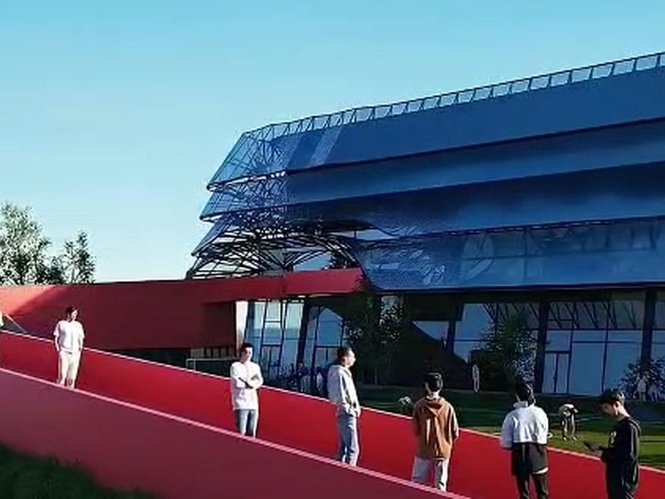
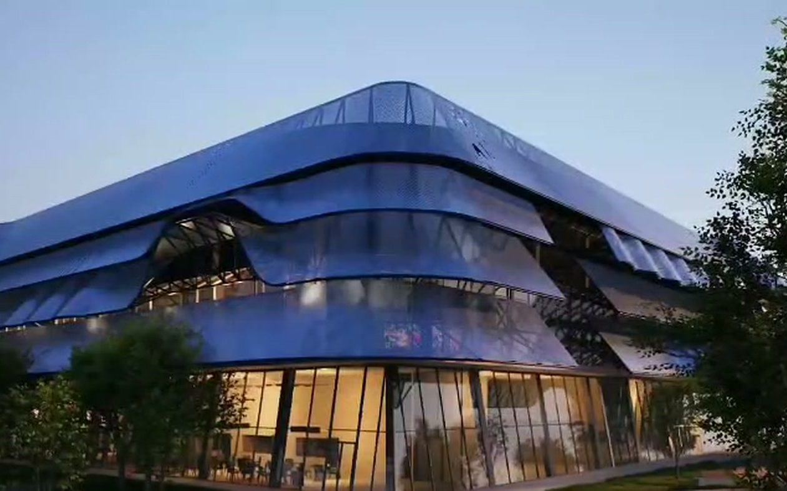
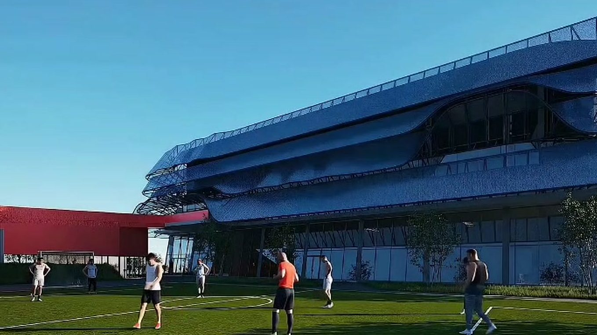
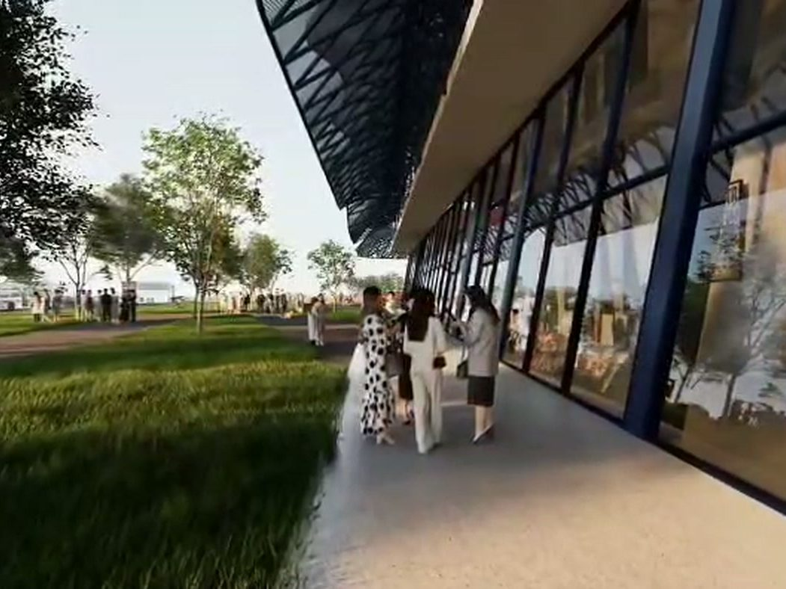
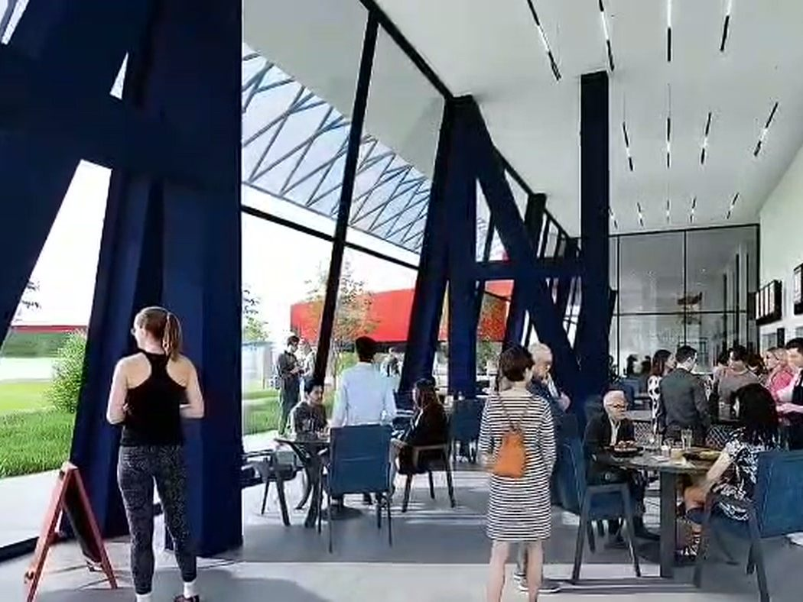
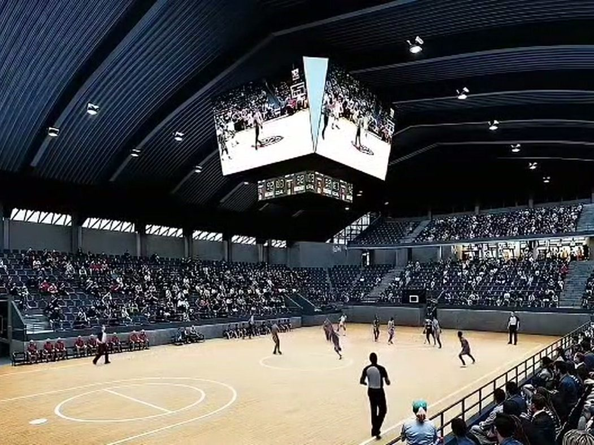
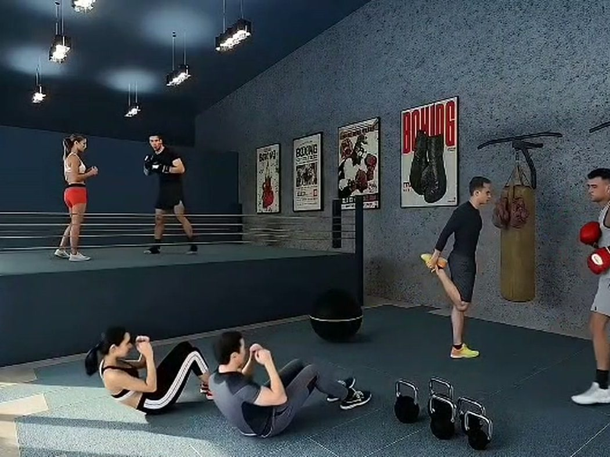
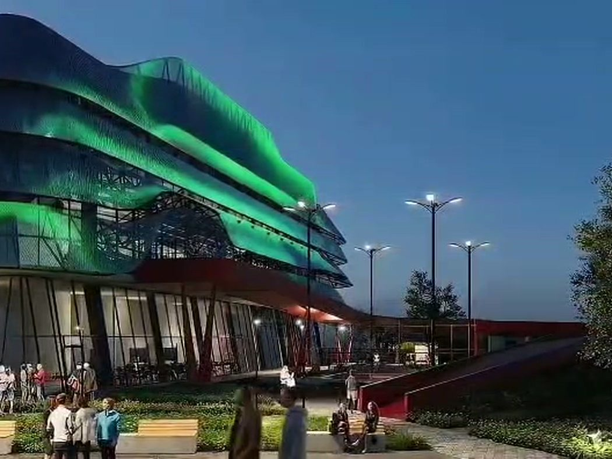
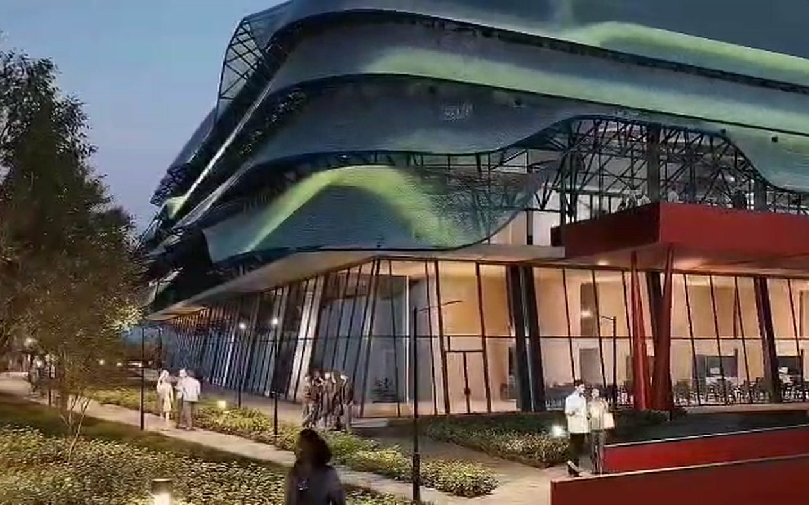

La arquitectura no comienza con un plano; comienza con una estrategia.
Arquitecto con formación en estructuras y en dirección de empresas. Mi experiencia abarca todas las etapas: la oportunidad, el modelo de negocio, el diseño, el financiamiento y la obra. Más que diseñar edificios, desarrollo proyectos viables.
Mi proceso comienza antes del diseño: analizo el contexto, la viabilidad del negocio y el modelo financiero para que cada decisión arquitectónica responda a objetivos claros. Creatividad, análisis y gestión en una sola disciplina.
Estructuras en Europa; Administración y Dirección de Empresas en el IDE Business School.
Diseño, planificación y ejecución de proyectos inmobiliarios de distintas escalas.
Banco de Desarrollo de América Latina y el Caribe, en proyectos de planificación e infraestructura.
Dirección y desarrollo integrando arquitectura, modelo de negocio, planificación financiera y gestión del financiamiento.
Diseño y dirección técnica de equipamientos deportivos de gran escala para entidades públicas.
Integrante del equipo ganador del Concurso Público de Ideas.
Soy arquitecto con formación en diseño, estructuras y administración de empresas, especializado en el desarrollo integral de proyectos inmobiliarios. Mi experiencia abarca todas las etapas de un proyecto, desde la identificación de oportunidades y la estructuración del modelo de negocio hasta el diseño arquitectónico, la planificación financiera, la obtención de financiamiento, la coordinación técnica y la ejecución de la obra.
Más que diseñar edificios, me enfoco en desarrollar proyectos viables, integrando arquitectura, ingeniería, estrategia y gestión para transformar una idea en una inversión sostenible. He participado en el desarrollo de proyectos residenciales, comerciales y de equipamiento, buscando siempre equilibrar la calidad del diseño, la eficiencia técnica y la rentabilidad del proyecto.
Creo que la arquitectura debe resolver mucho más que un programa funcional. Cada proyecto representa una oportunidad para crear valor, tanto para las personas que lo habitan como para quienes invierten en él.
Mi proceso comienza mucho antes del diseño: analizo el contexto, la viabilidad del negocio, el modelo financiero y la estrategia de desarrollo para asegurar que cada decisión arquitectónica responda a objetivos claros. Entiendo la arquitectura como una disciplina que integra creatividad, análisis y gestión, donde el éxito de un proyecto depende tanto de la calidad de sus espacios como de su capacidad para ser técnica, económica y financieramente sostenible.
Años desarrollando proyectos inmobiliarios.
Obras entre residencial, comercial y equipamiento.
Proyectos de gran escala desarrollados.
Etapas cubiertas, de la estrategia a la ejecución.

Arena cubierta, centro de entrenamiento y planta baja comercial bajo una envolvente metálica continua.
Un recorrido por la escala, la luz y el detalle de la obra.






